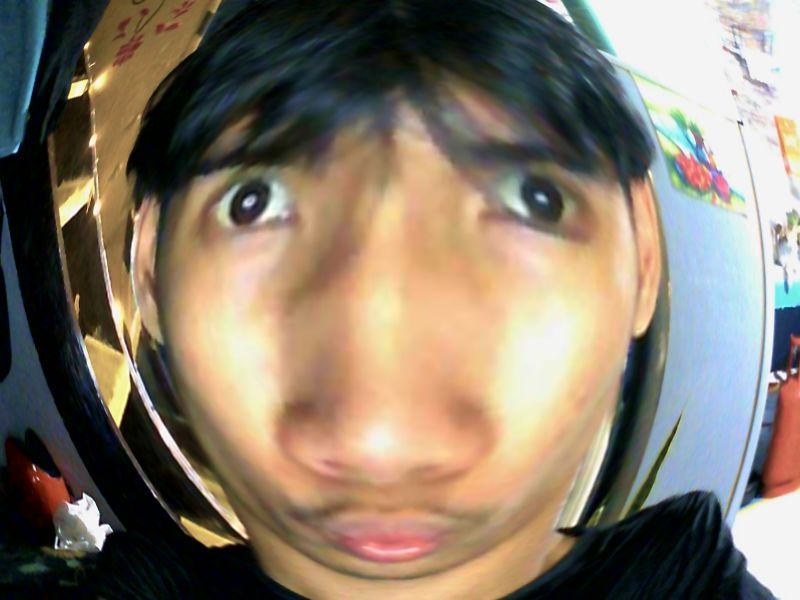
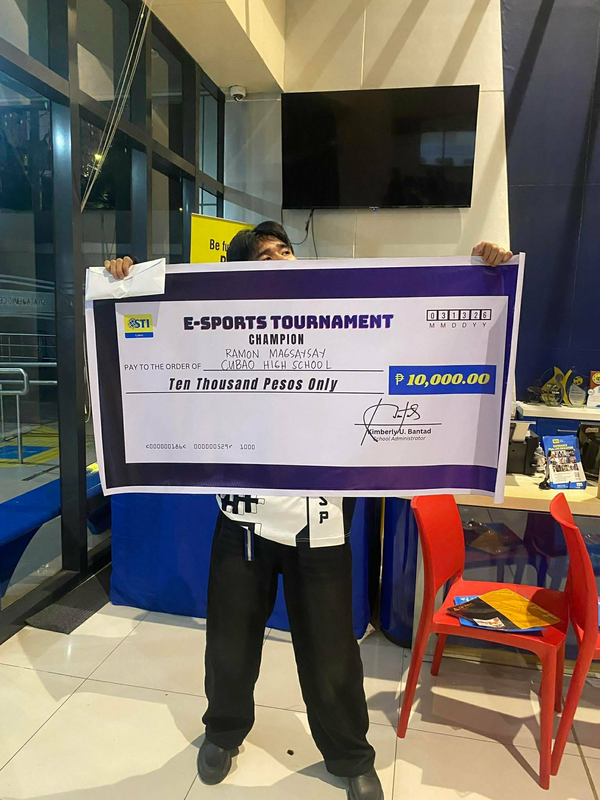
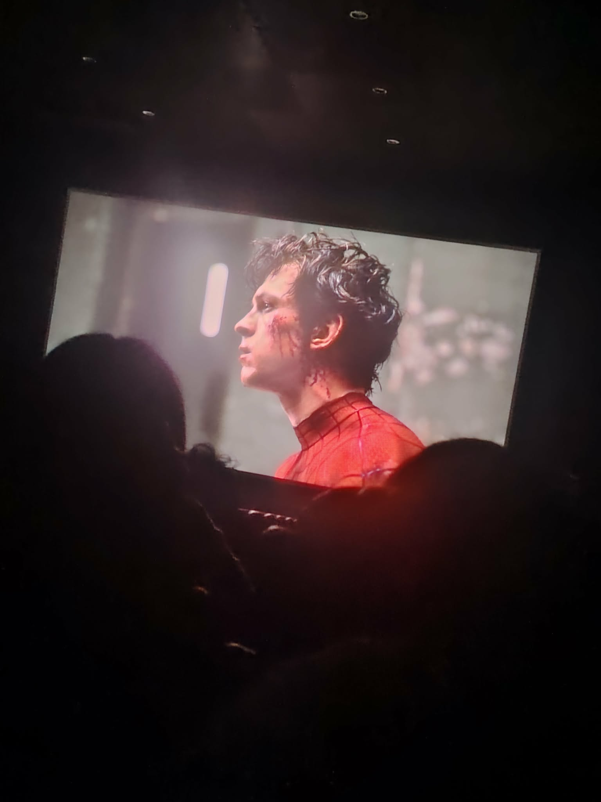
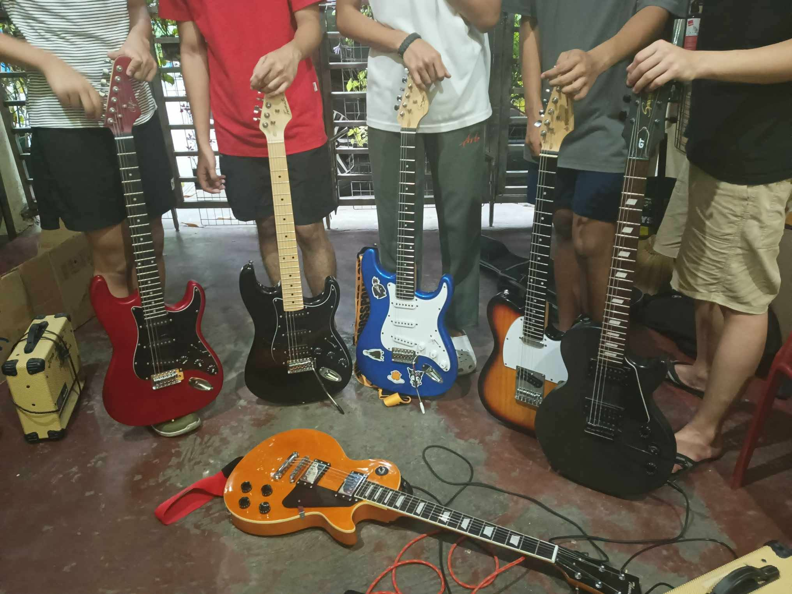
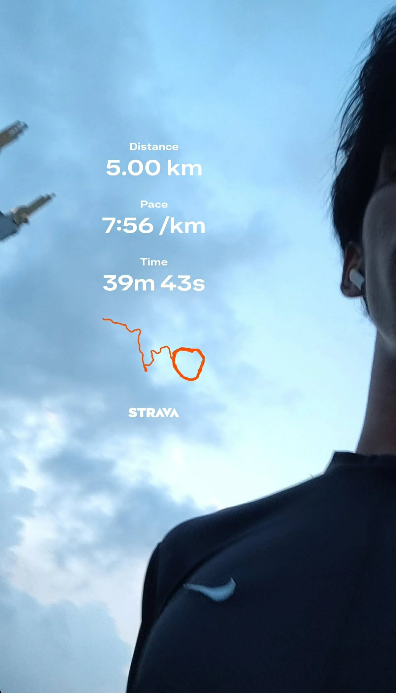

I am Jose Miguel E. Tenerife, a young person with deep ambitions in life and a strong passion for technology.
When I grow up, I want to become a dedicated IT professional
so I can contribute to technological innovation,
help others, and actively keep pace with the rapid growth of our economy.
I am pursuing a Bachelor of Science in Information Technology at Gardner College Diliman.
As a young person with deep ambitions and a strong passion for technology,
I am a person who is very passionate about technology and programming,
and i am always eager to learn new things and improve my skills.
I love playing and competing in games because the feeling when you win is different. Sometimes you lose,
but you take it as a learning experience because you can't always win.
This picture was taken when my friends and I became the champions of the STI Cubao MLBB tournament.

I always love watching things like anime, movies, and K-dramas
because this is my way of relieving stress, especially when I'm alone.

The reason I got into playing the guitar is because of what I see on social media,
they are so good, and the guitar solos they play sound so satisfying to the ear.
So after that, I practiced playing the guitar all by myself, watching tutorials on YouTube to learn.
And I get to hang out with my friends and bandmates, and sometimes we jam together.

I like jogging because sometimes when I have nothing else to do at home,
I think of going for a jog, sort of to stay healthy as well.
